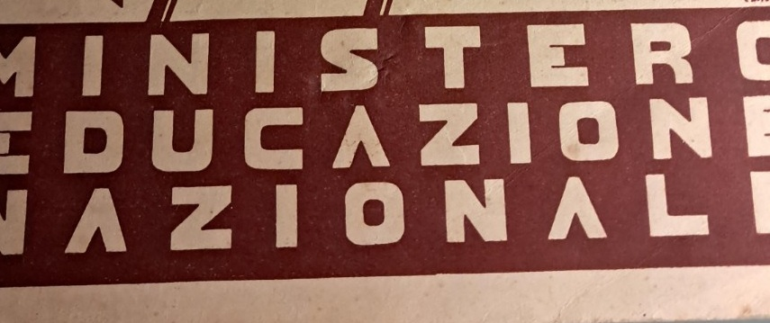
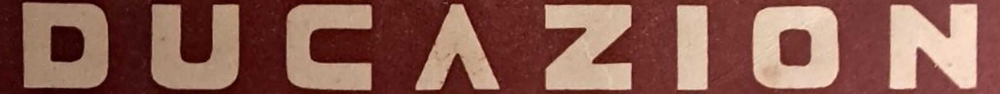
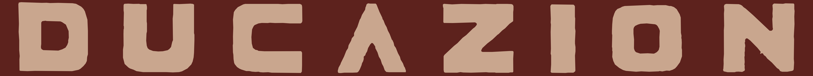

IL GATTO HA OCCUPATO IL DIVANO. LE TRATTATIVE PER SEDERSI SONO ANCORA IN CORSO.
Two fonts, reconstructed
Lettering from Italian booklet covers, with the originals and evidence in Study.
ho comprato una pianta per sentirmi adulto. ora siamo in due ad aspettare che qualcuno ci dia da bere.
CC BY 4.0Use, share and adapt the reconstructed fonts with attribution to Balilla Type Lab. Read the licence.
Full source pages
Complete original images supplied for this study, not technical crops or generated proofs. Display permission does not grant a source-image licence; CC BY 4.0 applies only to the reconstructed fonts.
How it was made
Photos → rectified images (perspective straightened) → isolated printed shapes → font outlines and spacing metrics → checked against the same samples.
Only observed printed glyphs are source evidence. Missing glyphs are marked as additions, not historical evidence. Each face uses its own printed sample; repeated letters use one representative shape. Handwriting is excluded. These are not complete historical alphabets or a claim of 100% fidelity. Comparing with the same samples is not an independent test.
A tentative third face remains withheld: its evidence did not support a source-faithful full alphabet.
Cover capitals · Panel lettering · s, t, z proofs · Code and instructions
{{A_LABEL}}
The burgundy cover’s heavy capitals: the middle row, EDUCAZIONE. We compare {{A_SCORED_TEXT}}; the end letters are cut by the photo. Other observed capitals come from adjacent rows of the same lettering. Lower-case keys show capitals.



{{A_DICE_PCT}}% shape overlap (Dice) on this selected line, not the whole alphabet. Detailed report.
{{P_LABEL}}
The pale “ministero educazione nazionale” lettering in the obelisk cover’s green panel: six lines, 14 different letters and a hyphen. Repeated printed letters vary; the font keeps one observed shape per letter. Capital keys show lower case, and i has no dot.
{{P_TRACED_DICE_PCT}}% shape overlap on the traced shapes; {{P_DICE_PCT}}% across all 31 printed shapes, including repeats. This measures shapes, not spacing or additions. Detailed report · All-shapes comparison.
Panel face: proofs for s, t and z
Source, font and difference side by side. These letters are traced from the printed shapes, not constructed additions.
{{P_PROOFS}}Code and instructions
{{SOURCE_REPOSITORY_LINK}} Build scripts, evaluation methods, glyph labels and step-by-step local instructions belong there.
Original materials
User-supplied images are study inputs, not granted a licence by this project. CC BY 4.0 applies to the reconstructed fonts, not historical source materials.
Experiments from three more sources
Can these supplied images yield honest standalone letterforms? One sheet supports an experimental font; two text samples stop at diagnostic evidence.
Blackletter text probe
No font — diagnostic outlines only
Only o and l were retained as diagnostic observed-outline candidates. w and h were rejected. The decorative initial is excluded; no alphabet or font was extracted.


Alphabet-sheet probe
Experimental / observed-only / 63 characters (A–Z, a–z, 0–9, &)
Extracted only the 63 observed characters on the supplied sheet. No missing characters were invented. Side bearings and advances are experimental settings, not recovered historical spacing. This is not production-quality or historical verification.


Engraved cursive probe
No font — zero complete glyphs accepted
Connected strokes and fragile hairlines prevent honest standalone-glyph extraction from this sample without intervention. Only segmentation diagnostics were produced: no complete glyphs, repaired contours or font. The blackletter heading is excluded.


CC BY 4.0 applies to reconstructed font files, not supplied or historical source images. Technical evidence and per-glyph records belong in the source repository; see Code and instructions.